감정평가사-1차-1교시 (2021-04-24 기출문제)
1과목: 민법(총칙,물권)
1. 관습법과 사실인 관습에 관한 설명으로 옳지 않은 것은? (다툼이 있으면 판례에 따름)
- 관습법은 성문법에 대하여 보충적 효력을 갖는다.
- 공동선조와 성과 본을 같이하는 미성년자인 후손은 종중의 구성원이 될 수 없다.
- 관습법이 성립한 후 사회구성원들이 그러한 관행의 법적 구속력에 더 이상 법적 확신을 갖지 않게 된 경우, 그 관습법은 법적 규범으로서의 효력이 없다.
- 사실인 관습은 법령으로서의 효력이 없고, 법률행위 당사자의 의사를 보충함에 그친다.
- 미등기 무허가건물의 매수인은 그 소유권이전등기를 마치지 않아도 소유권에 준하는 관습상의 물권을 취득한다.
(정답률: 알수없음)

2. 신의성실의 원칙에 관한 설명으로 옳은 것을 모두 고른 것은? (다툼이 있으면 판례에 따름)
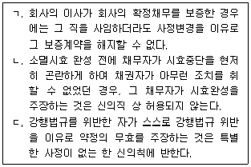
- ㄱ
- ㄷ
- ㄱ, ㄴ
- ㄴ, ㄷ
- ㄱ, ㄴ, ㄷ
(정답률: 알수없음)
3. 제한능력에 관한 설명으로 옳지 않은 것은?
- 가정법원은 한정후견개시의 심판을 할 때 본인의 의사를 고려하지 않아도 된다.
- 가정법원은 취소할 수 없는 피성년후견인의 법률행위의 범위를 정할 수 있으나, 성년후견인의 청구에 의하여 이를 변경할 수 있다.
- 성년후견인은 일상생활에 필요하고 그 대가가 과도하지 않은 피성년후견인의 법률행위를 취소할 수 없다.
- 가정법원은 성년후견개시의 심판을 할 때 본인의 의사를 고려하여야 한다.
- 피성년후견인이 성년후견인의 동의를 얻어 재산상의 법률행위를 한 경우에도 성년후견인은 이를 취소할 수 있다.
(정답률: 알수없음)
4. 실종선고에 관한 설명으로 옳지 않은 것은? (다툼이 있으면 판례에 따름)
- 가족관계등록부상 이미 사망으로 기재되어 있는 자에 대해서는 원칙적으로 실종선고를 할 수 없다.
- 실종선고를 받아 사망으로 간주된 자는 실종선고가 취소되지 않는 한 반증을 통해 그 효력을 번복할 수 없다.
- 실종선고 후 그 취소 전에 선의로 한 행위의 효력은 실종선고의 취소에 의해 영향을 받지 않는다.
- 실종선고의 취소에는 공시최고를 요하지 않는다.
- 실종자를 당사자로 한 판결이 확정된 후에 실종선고가 확정되어 그 사망주간의 시점이 소 제기 전으로 소급하는 경우, 특별한 사정이 없는 한 그 판결은 당사자능력이 없는 사람을 상대로 한 판결로서 무효가 된다.
(정답률: 알수없음)
5. 법인에 관한 설명으로 옳지 않은 것은? (다툼이 있으면 판례에 따름)
- 사단법인 이사의 대표권 제한은 이를 등기하지 않으면 악의의 제3자에게도 대항하지 못한다.
- 재단법인의 정관변경은 그 변경방법을 정관해서 정한 때에도 주무관청의 허가를 얻지 않으면 그 효력이 없다.
- 재단법인의 기본재산에 관한 근저당권 설정행위는 특별한 사정이 없는 한 주무관청의 허가를 얻을 필요가 없다.
- 재단법인의 기본재산 변경 시, 그로 인하여 기본재산이 새로이 편입되는 경우에는 주무관청의 허가를 얻을 필요가 없다.
- 법인에 대한 청산종결등기가 경료된 경우에도 청산사무가 종결되지 않는 한 그 범위내에서는 청산법인으로서 존속한다.
(정답률: 알수없음)
6. 법인의 불법행위책임에 관한 설명으로 옳은 것은? (다툼이 있으면 판례에 따름)
- 외형상 직무행위로 인정되는 대표자의 권한 남용행위에 대해서도 법인의 불법행위 책임이 인정될 수 있다.
- 등기된 대표자의 행위로 인하여 타인에게 손해룹 가한 경우에만 법인의 불법행위책임이 성립할 수 있다.
- 대표자의 행위가 직무에 관한 행위에 해당하지 않음을 피해자 자신이 중대한 과실로 알지 못한 경우, 법인의 불법행위책임이 인정된다.
- 대표권 없는 이사가 그 직무와 관련하여 타인에게 손해를 가한 경우, 법인의 불법행위책임이 성립한다.
- 법인의 불법행위책임이 성립하는 경우 그 대표기관은 손해배상책임이 없다.
(정답률: 알수없음)
7. 비법인사단에 관한 설명으로 옳은 것은? (다툼이 있으면 판례에 따름)
- 비법인사단의 대표자는 자신의 업무를 타인에게 포괄적으로 위임할 수 있다.
- 여성은 종중구성원이 되지만, 종중총회의 소집권을 가지는 연고항존자가 될 수는 없다.
- 이사의 선임에 관한 민법 제63조는 비법인사단에 유추적용될 수 없다.
- 교회는 비법인사단이므로 그 합병과 분열이 인정된다.
- 비법인사단의 대표자가 총회의 결의를 거치지 않고 총유물을 권한 없이 처분한 경우에는 권한을 넘은 표현대리에 관한 민법 제126조가 준용되지 않는다.
(정답률: 알수없음)
8. 물건에 관한 설명으로 옳지 않은 것은? (다툼이 있으면 판례에 따름)
- 주물 소유자의 사용에 공여되는 물건이라도 주물 자체의 효용과 직접 관계가 없으면 종물이 아니다.
- 「입목에 관한 법률」에 의하여 소유권보존등기룹 한 수목의 집단은 저당권의 객체가 된다.
- 종물과 주물의 관계에 관한 법리는 권리 상호간에도 적용될 수 있다.
- 분필절차를 거치지 않은 1필의 토지의 일부에 대해서도 저딩권을 설정할 수 있다.
- 저당권의 효력은 저당부동산의 종물에 미치므로 경매를 통하여 저당부동산의 소유권을 취득한 자는 특별한 사정이 없는 한 종불의 소유권을 취득한다.
(정답률: 알수없음)
9. 반사회적 법률행위에 관한 설명으로 옳지 않은 것은? (다툼이 있으면 판례에 따름)
- 어느 법률행위가 사회질서에 반하는지 여부는 특별한 사정이 없는 한 법률행위 당시를 기준으로 판단해야 한다.
- 강제집행을 면할 목적으로 부동산에 허위의 근저당권을 설정하는 행위는 특별한 사정이 없는 한 반사회적 법률행위라고 볼 수 없다.
- 대리인이 매도인의 배임행위에 적극 가담하여 이루어진 부동산의 이중매매의 경우, 본인인 매수인이 그러한 사정을 몰랐다면 반사회적 법률행위가 되지 않는다.
- 법률행위의 성립과정에서 단지 강박이라는 불법적 방법이 사용된 것에 불과한 때에는 반사회적 법률행위로 볼 수 없다.
- 반사회적 법률행위임을 이유로 하는 무효는 선의의 제3자에게 대항할 수 있다.
(정답률: 알수없음)
10. 물건의 승계취득에 해당하는 것은? (다툼이 있으면 판례에 따름)
- 무주물 선점에 의한 소유권 취득
- 상속에 의한 소유권 취득
- 환지처분에 의한 국가의 소유권 취득
- 건물 신축에 의한 소유권 취득
- 공용징수에 의한 토지 소유권 취득
(정답률: 알수없음)
11. 통정허위표시에 의하여 외형상 형성된 볍률관계를 기초로 하여 '새로운 법률상 이해관계를 맺은 제3자'에 해당하지 않는 자는? (다툼이 있으면 판례에 따름)
- 가장전세권에 관하여 저당권을 취득한 자
- 가장소비대차에 기한 대여금채권을 양수한 자
- 가장저딩권 설정행위에 기한 저당권의 실행에 의하여 목적부동산을 경락받은 자
- 가장의 채권양도 후 채무가 변제되지 않고 있는 동안 채권양도가 허위임이 밝혀진 경우에 있어서의 채무자
- 가장소비대차의 대주(貸主)가 파산한 경우, 파산자와는 독립한 지위에서 파산채권자 전체의 공동의 이익을 위하여 직무를 행하게 된 파산관재인
(정답률: 알수없음)
12. 착오에 의한 의사표시에 관한 설명으로 옳지 않은 것은? (다툼이 있으면 판례에 따름)
- 토지매매에 있어서 특별한 사정이 없는 한, 매수인이 측량을 통하여 매매목적물이 지적도상의 그것과 정확히 일치하는지 확인하지 않은 경우 중대한 과실이 인정된다.
- 상대방이 표의자의 진의에 동의한 경우 표의자는 착오를 이유로 의사표시룹 취소할 수 없다.
- 상대방에 의해 유발된 동기의 착오는 동기가 표시되지 않았더라도 중요부분의 착오가 될 수 있다.
- 상대방이 표의자의 착오를 알면서 이용한 경우에는 착오가 표의자의 중대한 과실로 인한 것이더라도 표의자는 착오에 의한 의사표시를 취소할 수 있다.
- 제3자의 기망행위에 의해 표시상의 착오에 빠진 경우에 사기가 아닌 착오를 이유로 의사표시를 취소할 수 있다.
(정답률: 알수없음)
13. 사기·강박에 의한 의사표시에 관한 설명으로 옳은 것은? (다툼이 있으면 판례에 따름)
- 교환계약의 당사자가 자기 소유 목적물의 시가를 묵비하였다면 특별한 사정이 없는 한, 위법한 기망행위가 상립한다.
- 강박에 의해 자유로운 의사결정의 여지가 완전히 박탈되어 그 외형만 있는 법률행위라고 하더라도 이를 무효라고 할 수는 없다.
- 토지거래허가룹 받지 않아 유동적 무효 상태에 있는 법률행위라도 사기에 의한 의사표시의 요건이 충족된 경우 사기를 이유로 취소할 수 있다.
- 대리인의 기망행위로 계약을 체결한 상대방은 본인이 대리인의 기망행위에 대해 선의·무과실이면 계약을 취소할 수 없다.
- 강박행위의 목적이 정당한 경우에는 비록 그 수단이 부당하다고 하더라도 위법성이 인정될 여지가 없다.
(정답률: 알수없음)
14. 의사표시의 효력발생에 관한 설명으로 옳지 않은 것은? (다툼이 있으면 판례에 따름)
- 도달주의의 원칙은 채권양도의 통지와 같은 준법률행위에도 유추적용될 수 있다.
- 의사표시의 부도달 또는 연착으로 인한 불이익은 특별한 사정이 없는 한 표의자가 이를 부담한다.
- 의사표시자가 그 통지를 발송한 후 제한능럭자가 되었다면 특별한 사정이 없는 한 그 의사표시는 취소할 수 있다.
- 수령무능럭자에케 의사표시를 한 경우, 특별한 사정이 없는 한 표의자는 그 의사표시로써 수령무능력자에게 대항할 수 없다.
- 상대방이 정당한 사유 없이 의사표시 통지의 수령을 거절한 경우, 상대방이 그 통지의 내용을 알 수 있는 객관적 상태에 놓여 있는 때에 의사표시의 효력이 생기는 것으로 보아야 한다.
(정답률: 알수없음)
15. 복대리에 관한 설명으로 옳은 것은? (다툼이 있으면 판례에 따름)
- 복대리인은 제3자에 대하여 대리인과 동일한 권리의무가 있다.
- 본인의 묵시적 승낙에 기초한 임의대리인의 복임권행사는 허용되지 않는다.
- 임의대리인이 본인의 명시적 승낙을 얻어 복대리인을 선임한 때에는 본인에 대하여 그 선임감독에 관한 책임이 없다.
- 법정대리인이 그 자신의 이름으로 선임한 복대리인은 법정대리인의 대리인이다.
- 복대리인의 대리행위에 대해서는 표현대리가 성립할 수 없다.
(정답률: 알수없음)
16. 표현대리에 관한 설명으로 옳지 않은 것을 모두 고른 것은? (다툼이 있으면 판례에 따름)
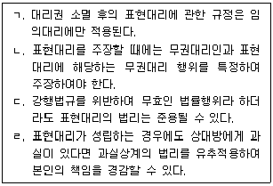
- ㄱ, ㄴ
- ㄴ, ㄷ
- ㄱ, ㄴ, ㄷ
- ㄱ, ㄷ, ㄹ
- ㄴ, ㄷ, ㄹ
(정답률: 알수없음)
17. 소급효가 원칙적으로 인정되지 않는 것은? (다툼이 있으면 판례에 따름)
- 무권대리인이 체결한 계약에 대한 추인의 효과
- 기한부 법률행위에서의 기한도래의 효과
- 토지거래 허가구역 내의 토지거래계약에 대한 허가의 효과
- 소멸시효 완성의 효과
- 법률행위 취소의 효과
(정답률: 알수없음)
18. 법률행위의 조건과 기한에 관한 설명으로 옳은 것은? (다툼이 있으면 판례에 따름)
- 법정조건도 법률행위의 부관으로서 조건에 해당한다.
- 채무면제와 같은 단독행위에는 조건을 붙일 수 없다.
- 기한은 특별한 사정이 없는 한 채권자의 이익을 위한 것으로 추정한다.
- 조건에 친하지 않은 법률행위에 불법조건을 붙이면 조건 없는 법률행위로 전환된다.
- 불확정한 사실의 발생을 기한으로 한 경우, 특별한 사정이 없는 한 그 사실의 발생이 불가능한 것으로 확정된 때에도 기한이 도래한 것으로 본다.
(정답률: 알수없음)
19. 소멸시효의 기산점에 관한 설명으로 옳지 않은 것은? (다툼이 있으면 판례에 따름)
- 정지조건부 권리는 조건이 성취되지 않은 동안에는 소멸시효가 진행되지 않는다.
- 이행기간을 정하지 않은 채권은 채권자의 이행최고가 있는 날로부터 소멸시효가 진행한다.
- 채무불이행으로 인한 손해배상청구권은 채무불이행시로부터 소멸시효가 진행한다.
- 동시이행의 항변권이 붙은 채권은 그 이행기로부터 소멸시효가 진행한다.
- 무권대리인에 대한 상대방의 계약이행청구권이나 손해배상청구권은 그 선택권을 행사할 수 있을 때부터 소멸시효가 진행한다.
(정답률: 알수없음)
20. 소멸시효에 관한 설명으로 옳지 않은 것은? (다툼이 있으면 판례에 따름)
- 소멸시효는 법률행위에 의하여 이를 배재하거나 연장할 수 없다.
- 시효의 중단은 원칙적으로 당사자 및 그 승계인 사이에서만 효력이 있다.
- 소멸시효 중단사유로서의 채무승인은 채무가 있음을 알고 있다는 뜻의 의사표시이므로 효과의사가 필요하다.
- 소멸시효의 이익은 시효가 완성되기 전에 미리 포기하지 못한다.
- 소멸시효 완성 후 채무자는 시효완성의 사실을 알고 그 채무를 묵시적으로 승인함으로써 시효의 이익을 포기할 수 있다.
(정답률: 알수없음)
21. 부동산등기에 관한 설명으로 옳지 않은 것은? (다툼이 있으면 판례에 따름)
- 전부 멸실한 건물의 보존등기를 신축한 건물의 보존등기로 유용하는 것은 허용된다.
- 물권에 관한 등기가 원인 없이 말소되었더라도 특별한 사정이 없는 한 그 물권의 효력에는 아무런 영향을 미치지 않는다.
- 소유권이전청구권 보전의 가등기가 있더라도 소유권이전등기를 청구할 어떤 법률관계가 있다고 추정되지 않는다.
- 가등기권리자가 가등기에 기한 소유권이전의 본등기를 한 경우에는 등기공무원은 그 가등기 후에 한 제3자 명의의 소유권이전등기를 직권으로 말소하여야 한다.
- 소유권이전등기가 마쳐지면 그 등기명의자는 제3자는 물론이고 전소유자에 대해서도 적법한 등기원인에 의하여 소유권을 취득한 것으로 추정된다.
(정답률: 알수없음)
22. 점유자와 회복자의 관계에 관한 설명으로 옳은 것은? (다툼이 있으면 판례에 따름)
- 선의의 점유자가 취득하는 과실에 점유물의 사용이익은 포함되지 않는다.
- 유치권자에게는 원칙적으로 수익목적의 과실수취권이 인정된다.
- 점유물이 점유자의 귀책사유로 훼손된 경우, 선의의 점유자는 소유의 의사가 없더라도 이익이 현존하는 한도에서 배상책임이 있다.
- 회복자로부터 점유물의 반환을 청구 받은 점유자는 유익비의 상환을 청구할 수 있다.
- 점유물의 소유자가 변경된 경우, 점유자는 유익비 지출 당시의 전 소유자에게 비용의 상환을 청구해야 한다.
(정답률: 알수없음)
23. 총유에 관한 설명으로 옳지 않은 것은? (다툼이 있으면 판례에 따름)
- 비법인사단이 총유물에 관한 매매계약을 체결하는 행위는 총유물의 처분행위가 아니다.
- 비법인사단이 타인 간의 금전채무를 보증하는 행위는 총유물의 관리·처분행위가 아니다.
- 총유물의 보존행위는 특별한 사정이 없는 한 구성원이 단독으로 결정할 수 없다.
- 비법인사단의 대표자는 총유재산에 관한 소송에서 단독으로 당사자가 될 수 없다.
- 비법인사단이 주택조합이 주체가 되어 신축 완공한 건물로서 일반에게 분양되는 부분은 조합원 전원의 총유에 속한다.
(정답률: 알수없음)
24. 점유에 관한 설명으로 옳지 않은 것은? (다툼이 있으면 판례에 따름)
- 점유매개자의 점유를 통한 간접점유에 의해서도 점유에 의한 시효취득이 가능하다.
- 사기의 의사표시에 의해 건물을 명도해 준 자는 점유회수의 소권을 행사할 수 없다.
- 미등기건물을 양수하여 건물에 관한 사실상의 처분권을 보유한 양수인은 그 건물부지의 점유자이다.
- 간접점유의 요건이 되는 점유매개관계는 법률행위가 아닌 법령의 규정에 의해서는 설정될 수 없다.
- 상속에 의하여 점유권을 취득한 상속인은 새로운 권원에 의하여 자기 고유의 점유를 개시하지 않는 한 피상속인의 점유를 떠나 자기만의 점유를 주장할 수 없다.
(정답률: 알수없음)
25. 선의취득에 관한 설명으로 옳은 것은? (다툼이 있으면 판례에 따름)
- 선의취득에 관한 민법 제249조는 저당권의 취득에도 적용된다.
- 동산의 선의취득에 필요한 점유의 취득은 현실의 인도뿐만 아니라 점유개정에 의해서도 가능하다.
- 선의취득의 요건인 선의·무과실의 판단은 동산의 인도 여부와 관계없이 물권적 합의가 이루어진 때를 기준으로 한다.
- 도품·유실물에 관한 민법 제251조는 선의취득자에게 그가 지급한 대가의 변상시까지 취득물의 반환청구를 거부할 수 있는 항변권만을 인정한다는 취지이다.
- 제3자에 대한 목적물반환청구권을 양수인에게 양도하고 지명채권 양도의 대항요건을 갖추면 동산의 선의취득에 필요한 점유의 취득요건을 충족한다.
(정답률: 알수없음)
26. 구분소유적 공유관계에 관한 설명으로 옳지 않은 것은? (다툼이 있으면 판례에 따름)
- 구분소유적 공유관계의 해소는 상호명의신탁의 해지에 의한다.
- 당사자 내부에 있어서는 각자가 특정매수한 부분은 각자의 단독 소유가 된다.
- 구분소유적 공유지분을 매수한 자는 당연히 구분소유적 공유관계를 승계한다.
- 제3자의 방해행위가 있으면 공유자는 자기의 구분소유 부분뿐만 아니라 전체 토지에 대하여 공유물의 보존행위로서 그 배제를 구할 수 있다.
- 구분소유적 공유관계는 어떤 토지에 관하여 그 위치와 면적을 특정하여 여러 사람이 구분소유하기로 하는 약정이 있어야만 적법하게 성립할 수 있다.
(정답률: 알수없음)
27. 부동산 취득시효에 관한 설명으로 옳지 않은 것은? (다툼이 있으면 판례에 따름)
- 무과실은 점유취득시효의 요건이 아니다.
- 성명불상자의 소유물도 시효취득의 대상이 된다.
- 점유취득시효가 완성된 후에는 취득시효 완성의 이익을 포기할 수 있다.
- 행정재산은 시효취득의 대상이 아니다.
- 압류는 점유취득시효의 중단사유이다.
(정답률: 알수없음)
28. 甲은 자신의 X토지를 乙에게 매도하였고, 乙은 X토지를 丙에게 전매하였다. 다음 설명으로 옳지 않은 것을 모두 고른 것은? (다툼이 있으면 판례에 따름)
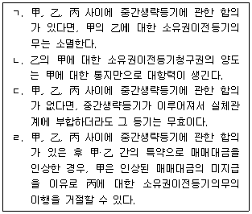
- ㄱ, ㄴ
- ㄴ, ㄷ
- ㄷ, ㄹ
- ㄱ, ㄴ, ㄷ
- ㄴ, ㄷ, ㄹ
(정답률: 알수없음)
29. 공유관계에 관한 설명으로 옳지 않은 것은? (다툼이 있으면 판례에 따름)
- 부동산 공유자의 공유지분 포기의 의사표시가 다른 공유자에게 도달하더라도 이로써 곧바로 공유지분 포기에 따른 물권변동의 효력이 발생하는 것은 아니다.
- 소수지분권자는 공유물의 전부를 협의 없이 점유하는 다른 소수지분권자에게 공유물의 인도를 청구할 수 있다.
- 과반수 지분권자는 공유물의 관리에 관한 사항을 단독으로 결정할 수 있다.
- 토지공유자 사이에서는 지분비율로 공유물의 관리비용을 부담한다.
- 공유자는 특별한 사정이 없는 한 언제든지 공유물의 분할을 청구할 수 있다.
(정답률: 알수없음)
30. 공유물분할에 관한 설명으로 옳지 않은 것은? (다툼이 있으면 판례에 따름)
- 공유불분할의 효과는 원칙적으로 소급하지 않는다.
- 재판에 의한 공유물분할은 현물분할이 원칙이다.
- 공유관계가 존속하는 한, 공유물분할청구권만이 독립하여 시효로 소멸하지는 않는다.
- 공유토지를 현물분할하는 경우에 반드시 공유지분의 비율대로 토지 면적을 분할해야 하는 것은 아니다.
- 공유물분할의 조정절차에서 공유자 사이에 현물분할의 협의가 성립하여 조정조서가 작성된 때에는 그 즉시 공유관계가 소멸한다.
(정답률: 알수없음)
31. 부동산 실권리자명의 등기에 관한 법률상 명의신탁에 관한 설명으로 옳은 것은? (다툼이 있으면 판례에 따름)
- 투기·탈세 등의 방지라는 법의 목적상 명의신탁은 그 자체로 선량한 풍속 기타 사회질서에 위반된다.
- 명의신탁이 무효인 경우, 신탁자와 수탁자가 혼인하면 명의신탁약정이 체결된 때로부터 위 명의신탁은 유효하게 된다.
- 부동산 명의신탁약정의 무효는 수탁자로부터 그 부동산을 취득한 악의의 제3자에게 대항할 수 있다.
- 농지법에 띠른 제한을 피하기 위하여 명의신탁을 한 경우에도 그에 따른 수탁자 명의의 소유권이전등기가 불법원인급여라고 할 수 없다.
- 조세포탈 등의 목적 없이 종교단체장의 명의로 그 종교단체 보유 부동산의 소유권을 등기한 경우, 그 단체와 단체장 간의 명의신탁약정은 유효하다.
(정답률: 알수없음)
32. 甲은 乙에 대한 채권을 담보하기 워하여 乙소유의 X토지에 관하여 저당권을 취득하였다. 그 후 X의 담보가치 하락올 막기 위하여 乙의 X에 대한 사용·수익권을 배제하지 않는 지상권을 함께 취득하였다. 이에 관한 설명으로 옳지 않은 것은? (다툼이 있으면 판례에 따름)
- 甲의 지상권의 피담보채무는 존재하지 않는다.
- 甲의 채권이 시효로 소멸하면 지상권도 소멸한다.
- 甲의 채권이 변제 등으로 만족을 얻어 소멸하면 지상권도 소멸한다.
- 제3자가 甲에게 대항할 수 있는 권한 없이 X 위에 건물을 신축하는 경우, 甲은 그 축조의 중지를 요구할 수 있다.
- 제3자가 X를 점유·사용하는 경우, 甲은 지상권의 침해를 이유로 손해배상을 청구할 수 있다.
(정답률: 알수없음)
33. 분묘기지권에 관한 설명으로 옳지 않은 것은? (다툼이 있으면 판례에 따름)
- 분묘기지권을 시효취득하는 경우에는 특약이 없는 한 지료를 지급할 필요가 없다.
- 「장사 등에 관한 법률」이 시행된 후 설치된 분묘에 대해서는 더 이상 시효취득이 인정되지 않는다.
- 분묘기지권의 시효취득을 인정하는 종전의 관습법은 법적 규범으로서 효력을 상실하였다.
- 분묘기지권이 인정되는 분묘를 다른 곳에 이장하면 그 분묘기지권은 소멸한다.
- 분묘가 일시적으로 멸실되어도 유골이 존재하여 분묘의 원상회복이 가능하다면 분묘기지권은 존속한다.
(정답률: 알수없음)
34. 전세권에 관한 설명으로 옳은 것은? (다툼이 있으면 판례에 따름)
- 전세권이 성립한 후 목적물의 소유권이 이전되더라도 전세금반환채무가 당연히 신소유자에게 이전되는 것은 아니다.
- 전세권의 존속기간이 시작되기 전에 마친 전세권설정등기는 특별한 사정이 없는 한 그 기간이 시작되기 전에는 무효이다.
- 전세권을 설정한 때에는 전세금이 반드시 현실적으로 수수되어야 한다.
- 건물의 일부에 전세권이 설정된 경우 전세권의 목적물이 아닌 나머지 부분에 대해서도 경매를 신청할 수 있다.
- 전세권자가 통상의 필요비를 지출한 경우 그 비용의 상환을 청구하지 못한다.
(정답률: 알수없음)
35. 2020년 5월 신탁자 甲과 그의 친구인 수탁자 乙이 X부동산에 대하여 명의신탁약정을 한 후, 乙이 직접 계약당사자가 되어 丙으로부터 X를 매수하고 소유권이전등기를 마쳤다. 다음 설명으로 옳지 않은 것은? (다툼이 있으면 판례에 따름)
- 甲과 乙 사이의 명의신탁약정은 무효이다.
- 丙이 甲·乙 사이의 명의신탁약정 사실을 몰랐다면 乙은 X의 소유권을 취득한다.
- 丙이 甲·乙 사이의 명의신탁약정 사실을 알았는지 여부는 소유권이전등기가 마쳐진 때를 기준으로 판단하여야 한다.
- 乙이 X의 소유자가 된 경우 甲으로부터 제공받은 매수자금 상당액을 甲에게 부당이득으로 반환하여야 한다.
- 丙이 甲·乙 사이의 명의신탁약정 사실을 안 경우에도 乙이 그 사정을 모르는 丁에게 X를 매도하여 소유권이전등기를 마쳤다면 丁은 X의 소유권을 취득한다.
(정답률: 알수없음)
36. 유치권에 관한 설명으로 옳지 않은 것은? (다툼이 있으면 판례에 따름)
- 건물의 임차인이 임대인에게 지급한 임차보증금반환채권은 그 건물에 관하여 생긴 채권이 아니다.
- 임대인이 건물시설올 하지 않아 임차인이 건물을 임차목적대로 사용하지 못하였음을 이유로 하는 손해배상청구권은 그 건물에 관하여 생긴 채권이다.
- 수급인의 재료와 노력으로 건축되었고 독립한 건물에 해당되는 기성부분에 대하여는 특별한 사정이 없는 한 수급인은 유치권을 가질 수 없다.
- 채권자가 채무자를 직접점유자로 하여 간접점유하는 경우에는 유치권이 성립하지 않는다.
- 유치권자가 점유침탈로 유치물의 점유를 상실한 경우, 유치권은 원칙적으로 소멸한다.
(정답률: 알수없음)
37. 질권에 관한 설명으로 옳지 않은 것은? (다툼이 있으면 판례에 따름)
- 양도할 수 없는 물건은 질권의 목적이 되지 못한다.
- 질권자는 채권의 변제를 받기 위하여 질물을 경매할 수 있다.
- 채권질권의 효력은 질권의 목적이 된 채권 외에 그 채권의 지연손해금에는 미치지 않는다.
- 질권의 목적인 채권의 양도행위는 질권자의 이익을 해하는 변경에 해당되지 않으므로 질권자의 등의를 요하지 않는다.
- 수개의 채권을 담보하기 위하여 동일한 동산에 수개의 질권을 설정한 경우, 그 순위는 설정의 선후에 의한다.
(정답률: 알수없음)
38. 저당권에 관한 설명으로 옳지 않은 것은? (다툼이 있으면 판례에 따름)
- 저당부동산에 대한 압류 후에는 저당권설정자의 저당부동산에 관한 차임채권에도 저당권의 효력이 미친다.
- 저당목적물의 변형물에 대하여 이미 제3자가 압류하였더라도 저당권자가 스스로 이를 압류하지 않으면 물상대위권을 행사할 수 없다.
- 저당권븐 그 담보한 채권과 분리하여 타인에게 양도하거나 다른 채권의 담보로 하지 못한다.
- 저당권의 효력은 원칙적으로 저당부동산에 부합된 물건에 미친다.
- 저당부동산에 대하여 지상권을 취득한 제3자는 저당권자에게 그 부동산으로 담보된 채권을 변제하고 저당권의 소멸을 청구할 수 있다.
(정답률: 알수없음)
39. 甲은 乙에 대한 2억 원의 채권을 담보하기 위하여 乙소유 X토지와 Y건물에 대하여 각각 1번 공동저당권을 취득하였다. 그 후 丙은 乙에 대한 1억 6천만 원의 채권을 담보하기 워하여 X에 대하여 2번 저당권을, 丁은 乙에 대한 7천만 원의 채권을 담보하기 위하여 Y 에 대하여 2번 저당권을 취득하였다. 그 후 丙이 경매를 신청하여 X가 3억 원에 매각되어 배당이 완료되었고, 다시 丁아 경매를 신청하여 Y가 1억 원에 매각되었다. 丁이 Y의 매각대금에서 배당받을 수 있는 금액은? (단, 경매비용·이자 등은 고려하지 않으며, 다툼이 있으면 판례에 따름)
- 0원
- 3,500만원
- 4,000만원
- 5,000만원
- 7,000만원
(정답률: 알수없음)
40. 전세권을 목적으로 하는 저당권에 관한 설명으로 옳지 않은 것은? (다툼이 있으면 판례에 따름)
- 저당권설정자는 저당권자의 동의 없이 전세권을 소멸하게 하는 행위를 하지 못한다.
- 전세권의 존속기간이 만료된 경우 저당권자는 전세권 자체에 대해 저덩권을 실행할 수 있다.
- 전세권의 존속기간이 만료되면 저당권자는 전세금반환채권애 대하여 물상대위할 수 있다.
- 전세금반환채권은 저당권의 목적물이 아니다.
- 전세권이 기간만료로 소멸한 경우 전세권설정자는 원칙적으로 전세권자에 대하여만 전세금반환의무를 부담한다.
(정답률: 알수없음)
2과목: 경제학원론
41. 무차별곡선에 관한 설명으로 옳지 않은 것은?
- 무차별곡선은 동일한 효용 수준을 제공하는 상품묶음들의 궤적이다.
- 무차별곡선의 기울기는 한계대체율이며 두 재화의 교환비율이다.
- 무차별곡선이 원점에 대해 오목하면 한계대체율은 체감한다.
- 완전대체재 관계인 두 재화에 대한 무차별곡선은 직선의 형태이다.
- 모서리해를 제외하면 무차별곡선과 예산선이 접하는 점이 소비자의 최적점이다.
(정답률: 알수없음)
42. 사회후생에 관한 설명으로 옳지 않은 것은?
- 차선의 이론은 부분적 해결책이 최적은 아닐 수 있음을 보여준다.
- 롤즈(J. Rawls)적 가치판단을 반영한 사회무차별곡선은 L자 모양이다.
- 파레토 효율성 조건은 완전경쟁의 상황에서 충족된다.
- 공리주의적 사회후생함수는 최대다수의 최대행복을 나타낸다.
- 애로우(K. Arrow)의 불가능성 정리에서 파레토원칙은 과반수제를 의미한다.
(정답률: 알수없음)
43. 수요곡선에 관한 설명으로 옳지 않은 것은?
- 우하향하는 수요곡선의 경우, 수요의 법칙이 성립한다.
- 기펜재(Giffen goods)의 수요곡선은 대체효과보다 소득효과가 크기 때문에 우하향한다.
- 사적재화의 시장수요는 개별수요의 수평 합이다.
- 우하향하는 수요곡선의 높이는 한계편익이다.
- 소비자의 소득이 변하면 수요곡선이 이동한다.
(정답률: 알수없음)
44. 수요와 공급의 탄력성에 관한 설명으로 옳은 것은?
- 수요곡선이 수직이면 가격탄력성이 무한대이다.
- 우하향하는 직선의 수요곡선 상 모든점에서 가격탄력성은 같다.
- 가격탄력성이 1보다 크면 비탄력적이다.
- 우상향 직선의 공급곡선 Y축 절편이 0보다 크면 가격탄력성은 무조건 1보다 크다.
- 수요의 교차탄력성이 1보다 크면 두 상품은 보완재 관계이다.
(정답률: 알수없음)
45. 수요곡선은 P=10, 공급곡선은 Qs=P 이다. 정부가 한 단위당 2원의 물품세를 소비자에게 부과한 결과로 옳은 것은? (단, Qs는 공급량, P는 가격이다.)
- 소비자 대신 생산자에게 물품세를 부과하면 결과는 달라진다.
- 소비자잉여는 감소하였다.
- 생산자잉여의 감소분은 24원이다.
- 자중손실(deadweight loss)은 2원이다.
- 조세수입은 20원 증가하였다.
(정답률: 알수없음)
46. 원점에 대해 오목한 생산가능곡선에 관한 설명으로 옳지 않은 것은?
- X축 상품생산이 늘어나면 기울기가 더 가팔라진다.
- 생산기술이 향상되면 생산가능곡선이 원점에서 더 멀어진다.
- 기회비용 체증의 법칙이 상립한다.
- 생산가능곡선 기울기의 절댓값이 한계변환율이다.
- 생산가능곡선 상의 점에서 파레토 개선이 가능하다.
(정답률: 알수없음)
47. 시장 수요이론에 관한 설명으로 옳지 않은 것을 모두 고른 것은?
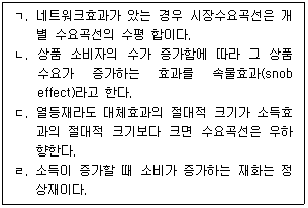
- ㄱ, ㄴ
- ㄱ, ㄷ
- ㄱ, ㄹ
- ㄴ, ㄷ
- ㄴ, ㄹ
(정답률: 알수없음)
48. 기업생산이론에 관한 설명으로 옳은 것을 모두 고른 것은?
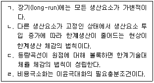
- ㄱ, ㄴ
- ㄷ, ㄹ
- ㄱ, ㄴ, ㄷ
- ㄴ, ㄷ, ㄹ
- ㄱ, ㄴ, ㄷ, ㄹ
(정답률: 알수없음)
49. 후생경제이론에 관한 설명으로 옳은 것은?
- 파레토(Pareto) 효율적인 상태는 파레토 개선이 가능한 상태를 뜻한다.
- 제2정리는 모든 사람의 선호가 오목성을 가지면 파레토 효율적인 배분은 일반경쟁 균형이 된다는 것이다.
- 제1정리는 모든 소비자의 선호체계가 약 단조성을 갖고 외부성이 존재하면 일반경쟁 균형의 배분은 파레토 효율적이라는 것이다.
- 제1정리는 완전경쟁시장 하에서 사익과 공익은 서로 상충된다는 것이다.
- 제1정리는 아담 스미스(A. Smith)의 '보이지 않는 손'의 역할을 이론적으로 뒷받침 해주는 것이다.
(정답률: 알수없음)
50. 노동(L)과 자본(K)만 이용하여 재화를 생산하는 기업의 생산함수가
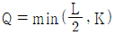
이다. 노동가격은 2원이고 자본가격은 3원일 때 기업이 재화 200개를 생산하고자 할 경우 평균비용(원)은? (단, 고정비용은 없다.)- 6
- 7
- 8
- 9
- 10
(정답률: 알수없음)
51. 표는 기업 甲과 乙의 초기 보수행렬이다. 제도 변화 후, 오염을 배출하는 乙은 배출 1톤에서 2톤으로 증가하는데 甲에게 보상금 5를 지불하게 되어 보수행렬이 변화했다. 보수행렬 변화 전, 후에 관한 설명으로 옳은 것은? (단, 1회성 게임이며, 보수행렬 ( ) 안 왼쪽은 甲, 오른쪽은 乙의 것이다.)
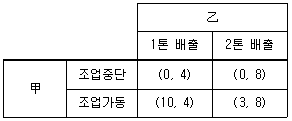
- 초기 상태의 내쉬균형은 (조업중단, 2톤 배출)이다.
- 초기 상태의 甲과 乙의 우월전략은 없다.
- 제도 변화 후 甲의 우월전략은 있으나 乙의 우월전략은 없다.
- 제도 변화 후 甲과 乙의 전체 보수는 감소했다.
- 제도 변화 후 오염물질의 총배출량은 감소했다.
(정답률: 알수없음)
52. 굴절수요곡선 모형에서 가격 안정성에 관한 설명으로 옳은 것은?
- 기업이 선택하는 가격에 대한 예싱된 변회가 대칭적이기 때문이다.
- 기업은 서로 담합하여 가격의 안정성을 확보한다.
- 일정 구간에서 비용의 변화에도 불구하고 상품가격은 안정적이다.
- 경쟁기업의 가격 인상에만 반응한다고 가정한다.
- 비가격정쟁이 증가하는 현상을 설명한다.
(정답률: 알수없음)
53. 기업 甲과 乙만 있는 상품시장에서 두 기업이 꾸르노(Cournot) 모형에 따라 행동하는 경우에 관한 설명으로 옳은 것을 모두 고른 것은? (단, 생산기술은 동일하다.)
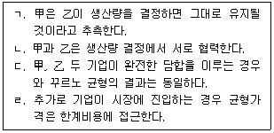
- ㄱ, ㄷ
- ㄱ, ㄹ
- ㄴ, ㄷ
- ㄴ, ㄹ
- ㄷ, ㄹ
(정답률: 알수없음)
54. 역선택에 관한 설명으로 옳은 것은?
- 동일한 조건과 보험료로 구성된 치아보험에 치아건강상태가 좋은 계층이 더 가입하려는 경향이 있다.
- 역선택은 정보가 대칭적인 중고차시장에서 자주 발생한다.
- 역선택 방지를 위해 통신사는 소비자별로 다른 요금을 부과한다.
- 의료보험의 기초공제제도는 대표적인 역선택 방지 수단이다.
- 품질표시제도는 역선택을 방지하기 위한 수단이다.
(정답률: 알수없음)
55. 순수 공공재에 관한 설명으로 옳지 않은 것은?
- 소비자가 많을수록 개별 소비자가 이용하는 편익은 감소한다.
- 시장수요는 개별 수비자 수요의 수직합으로 도출된다.
- 개별 소비자의 한계편익 합계와 공급에 따른 한계비용이 일치하는 수준에서 사회적 최적량이 결정된다.
- 시장에서 공급량이 결정되면 사회적 최적량에 비해 과소 공급된다.
- 공급량이 사회적 최적 수준에서 결정되려면 사회 전체의 정확한 선호를 파악해야 한다.
(정답률: 알수없음)
56. 독접기업의 가격차별 전략 중 이부가격제(two-part pricing)에 관한 설명으로 옳은 것을 모두 고른 것은?
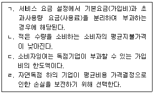
- ㄱ, ㄴ
- ㄱ, ㄷ
- ㄴ, ㄷ
- ㄱ, ㄴ, ㄷ
- ㄴ, ㄷ, ㄹ
(정답률: 알수없음)
57. 오염물질을 배출하는 기업 甲과 乙의 오염저감비용은 각각 TAC1=200+4X21, TAC2=200+X22 이다. 정부가 두 기업의 총오염배출량을 80톤 감축하기로 결정할 경우, 두 기업의 오염저감비용의 합계를 최소화하는 甲과 乙의 오염감축량은? (단, X1, X2는 각각 甲과 乙의 오염감축량이다.)
- X1=8, X2=52
- X1=16, X2=64
- X1=24, X2=46
- X1=32, X2=48
- X1=64, X2=16
(정답률: 알수없음)
58. 우하향하는 장기평균비용에 관한 설명으로 옳은 것은? (단, 생산기술은 동일하다.)
- 생산량이 서로 다른 기업의 평균비용은 동일하다.
- 진입 장벽이 없는 경우 기업의 참여가 증가한다.
- 소규모 기업의 평균비용은 더 낮다.
- 장기적으로 시장에는 한 기업만이 존재하게 된다.
- 소규모 다품종을 생산하면 평균비용이 낮아진다.
(정답률: 알수없음)
59. 상품의 시장수요곡선은 P=100-2Q이고, 한계비용은 20이며, 제품 한 단위당 20의 환경피해를 발생시킨다. 완전경쟁시장 하에서 (ㄱ)사회적 최적 수준의 생산량과 (ㄴ)사회후생의 순손실은? (단, P는 가격, Q는 생산량이다.)
- ㄱ: 20, ㄴ: 50
- ㄱ: 20, ㄴ: 100
- ㄱ: 30, ㄴ: 30
- ㄱ: 30, ㄴ: 100
- ㄱ: 40, ㄴ: 200
(정답률: 알수없음)
60. 기업 甲의 생산함수는 Q=2L0.5이며, Q의 가격은 4, L의 가격은 0.25이다. 이윤을 극대화하는 甲의 (ㄱ)노동투입량과 (ㄴ)균형산출량은? (단, L은 노동, Q는 산출물이며, 산출물시장과 노동시장은 완전경쟁적이다.)(문제 오류로 확정답안 발표시 모두 정답처리 되었습니다. 여기서는 1번을 누르면 정답 처리 됩니다.)
- ㄱ: 2, ㄴ: 2
- ㄱ: 2, ㄴ: 4
- ㄱ: 4, ㄴ: 4
- ㄱ: 4, ㄴ: 8
- ㄱ: 8, ㄴ: 16
(정답률: 알수없음)
61. 표의 IS-LM 모형에서 균형재정승수는? (단, Y, M, r, T, G, P는 각각 국민소득, 통화량, 이자율, 조세, 정부지출, 물가이다.)
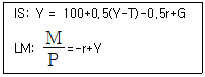
- 0
- 0.5
- 1
- 1.5
- 2
(정답률: 알수없음)
62. 한국은행의 통화정책 수단과 제도에 관한 설명으로 옳지 않은 것은?
- 국채 매입·매각을 통한 통화량 관리
- 금융통화위원회는 한국은행 통화정책에 관한 사항을 심의·의결
- 재할인율 조정을 통한 통화량 관리
- 법정지급준비율 변화를 통한 통화량 관리
- 고용증진 목표 달성을 위한 물가안정목표제 시행
(정답률: 알수없음)
63. 화폐에 관한 설명으로 옳은 것은?
- 상품화계의 내재적 가치는 변동하지 않는다.
- M2는 준화폐(near money)를 포함하지 않는다.
- 명령화폐(fiat money)는 내재적 가치를 갖는 화폐이다.
- 가치 저장수단의 역할로 소득과 지출의 발생 시점을 분리시켜 준다.
- 다른 용도로 사용될 수 있는 재화는 교환의 매개 수단으로 활용될 수 없다.
(정답률: 알수없음)
64. 폐쇄경제에서 국내총생산이 소비, 투자, 그리고 정부지출의 합으로 정의된 항등식이 성립할 때, 국내총생산과 대부자금시장에 관한 설명으로 옳지 않은 것은?
- 총저축은 투자와 같다.
- 민간저축이 증가하면 투자가 증가한다.
- 총저축은 민간저축과 정부저축이 합이다.
- 민간저축이 증가하면 이자율이 하락하여 정부저축이 증가한다.
- 정부저축이 감소하면 대부시장에서 이자율은 상승한다.
(정답률: 알수없음)
65. 화폐의 중립성이 성립하면 발생하는 현상으로 옳은 것은?
- 장기적으로는 고전적 이분법을 적용할 수 없다.
- 통화정책은 장기적으로 실업률에 영향을 줄 수 없다.
- 통화정책은 장기적으로 실질 경제성장률을 제고할 수 있다.
- 통화정책으로는 물가지수를 관리할 수 없다.
- 중앙은행은 국채 매입을 통해 실질 이자율을 낮출 수 있다.
(정답률: 알수없음)
66. 화폐수요에 관한 설명으로 옳은 것은?
- 이자율이 상승하면 현금통화 수요량이 감소한다.
- 물가가 상승하면 거래적 동기의 현금통화 수요는 감소한다.
- 요구불예금 수요가 증가하면 M1 수요는 감소한다.
- 실질 국내총생산이 증가하면 M1 수요는 감소한다.
- 신용카드 보급기술이 발전하면 현금통화 수요가 증가한다.
(정답률: 알수없음)
67. 소비자물가지수에 관한 설명으로 옳지 않은 것은?
- 기준연도에서 항상 100이다.
- 대체효과를 고려하지 못해 생계비 측정을 왜곡할 수 있다.
- 가격 변화 없이 품질이 개선될 경우, 생계비 측정을 왜곡할 수 있다.
- GDP 디플렐이터보다 소비자들의 생계비를 더 왜곡한다.
- 소비자가 구매하는 대표적인 재화와 서비스에 대한 생계비용을 나타내는 지표이다.
(정답률: 알수없음)
68. 실업률과 인플레이션율의 관계는 u=un-2(π-πe)이고 자연실업률이 3%이다. 보기를 고려하여 중앙은행이 0%의 인플레이션을 유지하는 준칙적 통화정책을 사용했을 때의 (ㄱ)실업률과, 최적 인플레이션율로 통제했을 때의 (ㄴ)실업률은? (단, u, un, π, πe는 각각 실업률, 자연실업률, 인플레이션율, 기대 인플레이션율이다.)
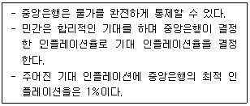
- ㄱ: 0%, ㄴ: 0%
- ㄱ: 1%, ㄴ: 0%
- ㄱ: 1%, ㄴ: 1%
- ㄱ: 2%, ㄴ: 1%
- ㄱ: 3%, ㄴ: 3%
(정답률: 알수없음)
69. 표의 기존 가정에 따라 독립투자승수를 계산했다. 계산된 승수를 하락시키는 가정의 변화를 모두 고른 것은?
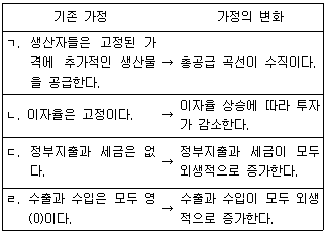
- ㄱ, ㄴ
- ㄱ, ㄷ
- ㄴ, ㄷ
- ㄴ, ㄹ
- ㄷ, ㄹ
(정답률: 알수없음)
70. 표는 기업 甲과 乙로만 구성된 A국의 연간 국내 생산과 분배를 나타낸다. 이에 관한 설명으로 옳지 않은 것은?
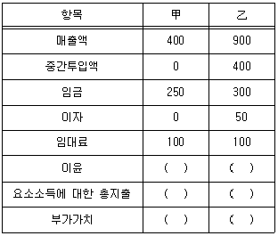
- 기업 甲의 요소소득에 대한 총지출은 400이다.
- 기업 甲의 부가가치는 400이다.
- 기업 甲의 이윤은 기업 乙의 이윤과 같다.
- A국의 임금, 이자, 임대료, 이윤에 대한 총지출은 900이다.
- A국의 국내총생산은 기업 甲과 기업 乙의 매출액 합계에서 요소소득에서 대한 총지출을 뺀 것과 같다.
(정답률: 알수없음)
71. 단기 필립스곡선은 우하향하고 장기 필립스곡선은 수직일 때, 인플레이션율을 낮출 경우 발생하는 현상으로 옳은 것은?
- 단기적으로 실업률이 증가한다.
- 장기적으로 실업률이 감소한다.
- 장기적으로 인플레이션 저감비용은 증가한다.
- 장기적으로 실업률은 자연실업률 보다 높다.
- 단기적으로 합리적 기대가설과 동일한 결과가 나타난다.
(정답률: 알수없음)
72. A국의 생산가능인구는 3,000만 명, 그 중에서 취업자는 1,400만 명, 실업자는 100만 명일 때 생산가능인구에 대한 비경제활동인구의 비율(%)은?
- 30
- 40
- 50
- 60
- 70
(정답률: 알수없음)
73. 현재 인플레이션율 8%에서 4%로 낮출 경우, 보기를 참고하여 계산된 희생률은? (단, πt, πt-1, Ut는 각각 t기의 인플레이션율, (t-1)기의 인플레이션율, t기의 실업률이다.)
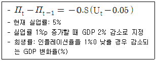
- 1.5
- 2
- 2.5
- 3
- 3.5
(정답률: 알수없음)
74. 변동환율제를 채택한 A국이 긴축재정을 실시하였다. 먼델-플레밍 모형을 이용한 정책 효과에 관한 설명으로 옳은 것을 모두 고른 것은? (단, 완전한 자본이동, 소국개방경제, 국가별 물가수준 고정을 가정한다.)
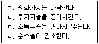
- ㄱ, ㄴ
- ㄱ, ㄷ
- ㄱ, ㄹ
- ㄴ, ㄷ
- ㄴ, ㄹ
(정답률: 알수없음)
75. 솔로우(R. Solow)의 경제성장모형에서 1인당 생산함수는 y=2k0.5, 저축률은 30%, 자본의 감가상각률은 25%, 인구증가율은 5%라고 가정한다. 균제상태(steady state)에서의 1인당 생산량 및 자본량은? (단, y는 1인당 생산량, k는 1인당 자본량이다.)
- y = 1, k = 1
- y = 2, k = 2
- y = 3, k = 3
- y = 4, k = 4
- y = 5, k = 5
(정답률: 알수없음)
76. 폐쇄경제 하에서 정부가 지출을 늘렸다. 이에 대응하여 중앙은행이 기존 이자율을 유지하려고 할 때 나타나는 현상으로 옳은 것을 모두 고른 것은? (단, IS곡선은 우하향하고 LM곡선은 우상향한다.)
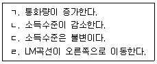
- ㄱ, ㄴ
- ㄱ, ㄷ
- ㄱ, ㄹ
- ㄴ, ㄹ
- ㄷ, ㄹ
(정답률: 알수없음)
77. 폐쇄경제 IS-LM 및 AD-AS 모형에서 정부지출 증가에 따른 균형의 변화에 관한 설명으로 옳은 것을 모두 고른 것은? (단, 초기경제는 균형상태, IS곡선 우하향, LM곡선 우상향, AD곡선 우하향, AS곡선은 수평선을 가정한다.)
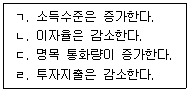
- ㄱ, ㄴ
- ㄱ, ㄷ
- ㄱ, ㄹ
- ㄴ, ㄷ
- ㄴ, ㄹ
(정답률: 알수없음)
78. A국 경제의 총수욕곡선과 총공급곡선이 각각 P=-Yd+4, P=Pe+(Ys-2)이다. Pe가 3에서 5로 증가할 때, (ㄱ)균형소득수준과 (ㄴ)균형물가수준의 변화는? (단, P는 물가수준, Yd는 총수요, Ys는 총공급, Pe는 기대물가수준이다.)
- ㄱ: 상승, ㄴ: 상승
- ㄱ: 하락, ㄴ: 상승
- ㄱ: 상승, ㄴ: 하락
- ㄱ: 하락, ㄴ: 하락
- ㄱ: 불변, ㄴ: 불변
(정답률: 알수없음)
79. 예상보다 높은 인플레이션이 발생할 경우 나타나는 효과에 관한 설명으로 옳지 않은 것은?
- 누진세 체계 하에서 정부의 조세수입은 감소한다.
- 채무자는 이익을 보지만 채권자는 손해를 보게 된다.
- 고정된 화폐소득을 얻는 봉급생활자는 불리해진다.
- 명목 국민소득이 증가한다.
- 화폐의 구매력이 감소한다.
(정답률: 알수없음)
80. 표의 경제모형에서 한계수입성향이 0.1로 감소하면 (ㄱ)균형국민소득과 (ㄴ)순수출 각각의 변화로 옳은 것은? (단, Y는 국민소득, C는 소비, I는 투자, X는 수출, M은 수입이다.)
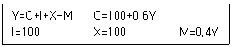
- ㄱ: 증가, ㄴ: 증가
- ㄱ: 감소, ㄴ: 증가
- ㄱ: 증가, ㄴ: 감소
- ㄱ: 감소, ㄴ: 감소
- ㄱ: 불변, ㄴ: 증가
(정답률: 알수없음)
3과목: 부동산학원론
81. 부동산의 개념에 관한 설명으로 옳지 않은 것은?
- 자연·공간·위치·환경 속성은 물리적 개념에 해당한다.
- 부동산의 절대적 위치는 토지의 부동성에서 비롯된다.
- 토지는 생산의 기본요소이면서 소비재가 된다.
- 협의의 부동산과 준부동산을 합쳐 광의의 부동산이라고 한다.
- 부동산의 법률적·경제적·물리적 측면을 결합한 개념을 복합부동산이라고 한다.
(정답률: 알수없음)
82. 토지의 분류 및 용어에 관한 설명으로 옳은 것은?
- 필지는 법률적 개념으로 다른 토지와 구별되는 가격수준이 비슷한 일단의 토지이다.
- 후보지는 부동산의 용도적 지역인 택지지역, 농지지역, 임지지역 상호간에 전환되고 있 는 지역의 토지이다.
- 나지는 「건축법」에 의한 건폐율·용적률 등의 제한으로 인해 한 필지 내에서 건축하지 않고 비워둔 토지이다.
- 표본지는 지가의 공시를 위해 가치형성요인이 같거나 유사하다고 인정되는 일단의 토지 중에서 선정한 토지이다.
- 공한지는 특정의 지점을 기준으로 한 택지이용의 최원방권의 토지이다.
(정답률: 알수없음)
83. 토지의 특성에 관한 설명으로 옳은 것을 모두 고른 것은?
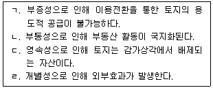
- ㄱ, ㄹ
- ㄴ, ㄷ
- ㄱ, ㄴ, ㄷ
- ㄴ, ㄷ, ㄹ
- ㄱ, ㄴ, ㄷ, ㄹ
(정답률: 알수없음)
84. 부동산수요의 가격탄력성에 관한 설명으로 옳지 않은 것은? (단, 다른 조건은 동일함)
- 수요곡선 기울기의 절댓값이 클수록 수요의 가격탄력성이 작아진다.
- 임대주택 수요의 가격탄력성이 1보다 작을 경우 임대료가 상승하면 전체 수입은 증가한다.
- 대체재가 많을수록 수요의 가격탄력성이 크다.
- 일반적으로 부동산의 용도전환 가능성이 클수록 수요의 가격탄력성이 커진다.
- 수요의 가격탄력성이 비탄력적이면 가격의 변화율보다 수요량의 변화율이 더 크다.
(정답률: 알수없음)
85. 수요함수와 공급함수가 각각 A부동산시장에서는 Qd=200-P,
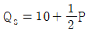
이고 B부동산시장에서는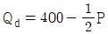
, Qs=50+2P이다. 거미집이론(Cob-web theory)에 의한 A시장과 B시장의 모형 형태의 연결이 옳은 것은? (단, x축은 수량, y축은 가격, 각각의 시장에 대한 P는 가격, Qd는 수요량, Qs는 공급량이며, 가격변화에 수요는 즉각 반응하지만 공급은 시간적인 차이를 두고 반응함, 다른 조건은 동일함)- A: 발산형, B: 수렴형
- A: 발산형, B: 순환형
- A: 순환형, B: 발산형
- A: 수렴형, B: 발산형
- A: 수렴형, B: 순환형
(정답률: 알수없음)
86. 도시공간구조이론에 관한 설명으로 옳지 않은 것은?
- 동심원이론은 도시공간구조의 형성을 침입, 경쟁, 천이 과정으로 설명하였다.
- 동심원이론에 따르면 중심지에서 멀어질수록 지대 및 인구밀도가 낮아진다.
- 선형이론에서의 점이지대는 중심업무지구에 직장 및 생활터전이 있어 중심업무지구에 근접하여 거주하는 지대를 말한다.
- 선형이론에 따르면 도시공간구조의 성장 및 분화가 주요 교통노선을 따라 부채꼴 모양으로 확대된다.
- 다핵심이론에 따르면 하나의 중심이 아니라 몇 개의 분리된 중심이 점진적으로 통합됨에 따라 전체적인 도시공간구조가 형성된다.
(정답률: 알수없음)
87. A토지에 접하여 도시·군계획시설(도로)이 개설될 확률은 60%로 알려져 있고, 1년 후에 해당 도로가 개설되면 A토지의 가치는 2억 7,500만원, 그렇지 않으면 9,350만원으로 예상된다. 만약 부동산시장이 할당효율적이라면 합리적인 투자자가 최대한 지불할 수 있는 정보비용의 현재가치는? (단, 요구수익률은 연 10%이고, 주어진 조건에 한함)
- 5,200만원
- 5,600만원
- 6,200만원
- 6,600만원
- 7,200만원
(정답률: 알수없음)
88. 부동산시장의 특성으로 옳은 것은?
- 일반상품의 시장과 달리 조직성을 갖고 지역을 확대하는 특성이 있다.
- 토지의 인문적 특성인 지리적 위치의 고정성으로 인하여 개별화된다.
- 매매의 단기성으로 인하여 유동성과 환금성이 우수하다.
- 거래정보의 대칭성으로 인하여 정보수집이 쉽고 은밀성이 축소된다.
- 부동산의 개별성으로 인한 부동산상품의 비표준화로 복잡·다양하게 된다.
(정답률: 알수없음)
89. A지역 아파트시장의 단기공급함수는 W=300, 장기공급함수는 Q=P+250이고, 수요함수는 장단기 동일하게
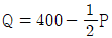
이다. 이 아파트시장이 단기에서 장기로 변화할 때 아파트시장의 균형가격(ㄱ)과 균형수량(ㄴ)의 변화는? (단, P는 가격이고 Q는 수급량이며, 다른 조건은 일정하다고 가정함)- ㄱ: 50 감소, ㄴ: 50 증가
- ㄱ: 50 감소, ㄴ: 100 증가
- ㄱ: 100 감소, ㄴ: 50 증가
- ㄱ: 100 감소, ㄴ: 100 증가
- ㄱ: 100 감소, ㄴ: 150 증가
(정답률: 알수없음)
90. 다음 중 현행 부동산가격공시제도에 관한 설명으로 옳은 것은 몇 개인가?
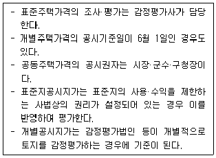
- 없음
- 1개
- 2개
- 3개
- 4개
(정답률: 알수없음)
91. 감정평가사 A는 표준지공시지가의 감정평가를 의뢰받고 현장조사를 통해 표준지에 대해 다음과 같이 확인하였다. 표준지조사평가보고서상 토지특성 기재방법의 연결이 옳은 것은?
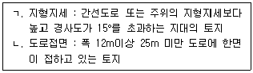
- ㄱ: 급경사, ㄴ: 광대한면
- ㄱ: 급경사, ㄴ: 중로한면
- ㄱ: 고지, ㄴ: 광대한면
- ㄱ: 고지, ㄴ: 중로한면
- ㄱ: 고지, ㄴ: 소로한면
(정답률: 알수없음)
92. 우리나라의 부동산제도와 근거법률의 연결이 옳은 것은?
- 토지거래허가제 - 「부동산 거래선고 등에 관한 법률」
- 검인계약서제 - 「부등산등기법」
- 토지은행제 - 「공익사업을 위한 토지 등의 취득 및 보상에 관한 법률」
- 개발부담금제 - 「재건축 초과이익 환수에 관한 법률」
- 분양가상한제 - 「건축물의 분양에 관한 법률」
(정답률: 알수없음)
93. 국토의 계획 및 이용에 관한 법령상 현재 지정될 수 있는 용도지역을 모두 고른 것은?
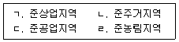
- ㄱ, ㄴ
- ㄴ, ㄷ
- ㄷ, ㄹ
- ㄱ, ㄴ, ㄷ
- ㄴ, ㄷ, ㄹ
(정답률: 알수없음)
94. 다음 중 부동산시장과 부동산정책에 관한 설명으로 옳은 것은?
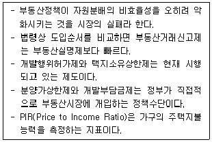
- 없음
- 1개
- 2개
- 3개
- 4개
(정답률: 알수없음)
95. 비율분석법음 이용하여 산출한 것으로 옳지 않은 것은? (단, 주어진 조건에 한하며, 연간 기준임)
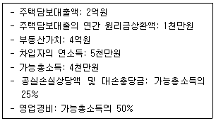
- 부채감당률(DCR)= 1.0
- 채무불이행률(DR)= 1.0
- 총부채상환비율(DTI)= 0.2
- 부채비율(debt ratio)= 1.0
- 영업경비비율(OER, 유효총소득 기준)=0.8
(정답률: 알수없음)
96. 사업기간 초에 3억원을 투자하여 다음과 같은 현금유입의 현재가치가 발생하는 투자사업이 있다. 이 경우 보간법으로 산출한 내부수익률은? (단, 주어진 조건에 한함)
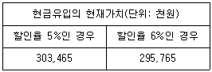
- 5.42%
- 5.43%
- 5.44%
- 5.45%
- 5.46%
(정답률: 알수없음)
97. 포트폴리오 이론에 관한 설명으로 옳지 않은 것은?
- 부동산투자에 수반되는 총위험은 체계적 위험과 비체제적 위험을 합한 것으로, 포트폴리오를 구성함으로써 제거될 수 있는 위험은 비체제적 위험이다.
- 포트폴리오블 구성하는 자산들의 수익률 간 상관계수가 1인 경우에는 포트폴리오를 구성한다고 하더라도 위험은 감소되지 않는다.
- 효율적 프론티어(efficient frontier)는 모든 위험수준에서 최대의 기대수익률을 올릴 수 있는 포트폴리오의 집합을 연결한 선이다.
- 무위험자산이 없는 경우의 최적 포트폴리오는 효율적 프론티어(efficient frontier)와 투자자의 무차별곡선이 접하는 점에서 결정되는데, 투자자가 위험선호형일 경우 최적포트폴리오는 위험기피형에 비해 저위험-고수익 포트폴리오가 된다.
- 위험자산으로만 구성된 포트폴리오와 무위험자산을 결합할 때 얻게 되는 직선의 기울기가 커질수록 기대초과수익률(위험프리미엄)이 커진다.
(정답률: 알수없음)
98. 부동산투자분석기법에 관한 설명으로 옳은 것을 모두 고른 것은? (던, 다른 조건은 동일함)
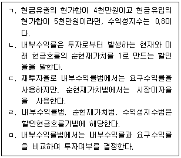
- ㄱ, ㄹ
- ㄴ, ㄷ
- ㄹ, ㅁ
- ㄱ, ㄴ, ㅁ
- ㄷ, ㄹ, ㅁ
(정답률: 알수없음)
99. 화폐의 시간가치계산에 관한 설명으로 옳은 것은?
- 연금의 현재가치계수에 일시불의 미래가치계수를 곱하면 연금의 미래가치계수가 된다.
- 원금균등분할상환방식에서 매 기간의 상환액을 계산할 경우 저당상수를 사용한다.
- 기말에 일정 누적액을 만들기 위해 매 기간마다 적립해야 할 금액을 계산할 경우 연금의 현재 가치계수를 사용한다.
- 연금의 미래가치계수에 일시불의 현재가치계수를 곱하면 일시불의 미래가치계수가 된다.
- 저당상수에 연금의 현재가치계수를 곱하면 일시불의 현재가치가 된다.
(정답률: 알수없음)
100. 부동산 금융에 관한 설명으로 옳은 것은?
- 역모기지(reverse mortgage)는 시간이 지남에 따라 대출잔액이 늘어나는 구조이고, 일반적으로 비소구형 대출이다.
- 가치상승공유형대출(SAM: Shared Appreciation Mortgage)은 담보물의 가치상승 일부분을 대출자가 사전약정에 의해 차입자에게 이전하기로 하는 조건의 대출이다.
- 기업의 구조조정을 촉진하기 위하여 기업구조조정 부동산투자회사에 대하여는 현물출자, 자산구성, 최저자본금을 제한하는 규정이 없다.
- 부채금융은 대출이나 회사채 발행 등을 통해 타인자본을 조달하는 방법으로서 저당담보부증권(MBS), 조인트벤처(joint venture) 등이 있다.
- 우리나라의 공적보증형태 역모기지제도로 현재 주택연금, 농지연금, 산지연금이 시행되고 있다.
(정답률: 알수없음)
101. 부동산 증권에 관한 설명으로 옳지 않은 것은?
- MPTS(Mortgage Pass-Through Securities)는 지분을 나타내는 증권으로서 유동화 기관의 부채로 표기되지 않는다.
- CMO(Collateralized Mortgage Obligation)동일한 저당풀(mortgage pool)에서 상환 우선순위와 만기가 다른 다양한 증권을 발행할 수 있다.
- 부동산개발PF ABCP(Asset Backed Commercial Paper)는 부동산개발PF ABS(Asset Backed Securities)에 비해 만기가 길고, 대부분 공모로 발행된다.
- MPTS(Mortgage Pass-Through Securities)는 주택담보대출의 원리금이 회수되면 MPTS의 원리금으로 지급되므로 유동화기관의 자금관리 필요성이 원칙적으로 제거된다.
- MBB(Mortgage Backed Bond)는 주택저당대출차입자의 채무불이행이 발생하더라도 MBB에 대한 원리금을 발행자가 투자자에게 지급하여야 한다.
(정답률: 알수없음)
102. 부동산투자회사법령상 자기관리 부동산투자회사가 자산을 투자·운용할 때 상근으로 두어야 하는 자산운용 전문인력에 해당되지 않는 사람은?
- 공인회계사로서 해당 분야에 3년 이상 종사한 사람
- 공인중개사로서 해당 분야에 5년 이상 종사한 사람
- 감정평가사로서 해당 분야에 5년 이상 종사한 사람
- 부동산 관련 분야의 석사학위 이상의 소지자로서 부동산의 투자·운용과 관련된 업무에 3년 이상 종사한 사람
- 자산관리회사에서 5년 이상 근무한 사람으로서 부동산의 취득·처분·관리·개발 또는 자문 등의 업무에 3년 이상 종사한 경력이 있는 사람
(정답률: 알수없음)
103. 대출조건이 다음과 같을 때, 5년 거치가 있을 경우( A )와 거치가 없을 경우( B )에 원금을 상환해야 할 첫번째 회차의 상환원금의 차액(A-B)은? (단, 주어진 조건에 한함)
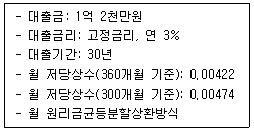
- 52,000원
- 54,600원
- 57,200원
- 59,800원
- 62,400원
(정답률: 알수없음)
104. 조기상환에 관한 설명으로 옳지 않은 것은?
- 조기상환이 어느 정도 일어나는가를 측정하는 지표로 조기상환율(CPR: Constant Prepayment Rate)이 있다.
- 저당대출차입자에게 주어진 조기상환권은 풋옵션(put option)의 일종으로, 차입자가 조기상환을 한다는 것은 대출잔액을 행사가격으로 하여 대출채권을 매각하는 것과 같다.
- 저당대출차입자의 조기상환 정도에 따라 MPTS(Mortgage Pass-Through Securities)의 현금흐름과 가치가 달라진다.
- 이자율 하락에 따른 위험을 감안하여 금융기관은 대출기간 중 조기상환을 금지하는 기간을 설정하고, 위반 시에는 위약금으로 조기상환수수료를 부과하기도 한다.
- 저당대출차입자의 조기상환은 MPTS(Mortgage Pass-Through Securities) 투자자에게 재투자 위험을 유발한다.
(정답률: 알수없음)
1⑤. 부동산신탁에 있어 위탁자가 부동산의 관리와 처분을 부동산신탁회사에 신탁한 후 수익증권을 발급받아 이를 담보로 금융기관에서 대출을 받는 신탁방식은?
- 관리신탁
- 처분신탁
- 담보신탁
- 개발신탁
- 명의신탁
(정답률: 알수없음)
106. 감정평가사 A는 단독주택의 감정평가를 의뢰받고 관련 공부(公簿)를 통하여 다음과 같은 사항을 확인하였다. 이 단독주택의 건폐율( ㄱ )과 용적률( ㄴ )은? (단, 주어진 자료에 한함)
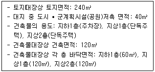
- ㄱ: 50.00%, ㄴ: 100.00%
- ㄱ: 50.00%, ㄴ: 120.00%
- ㄱ: 50.00%, ㄴ: 150.00%
- ㄱ: 60.00%, ㄴ: 120.00%
- ㄱ: 60.00%, ㄴ: 150.00%
(정답률: 알수없음)
107. 토지개발방식으로서 수용방식과 환지방식의 비교에 관한 설명으로 옳지 않은 것은? (단, 사업구역은 동일함)
- 수용방식은 환지방식에 비해 종전 토지소유자에게 개발이익이 귀속될 가능성이 큰 편이다.
- 수용방식은 환지 방식에 비해 사업비의 부담이 큰 편이다.
- 수용방식은 환지 방식에 비해 기반시설의 확보가 용이한 편이다.
- 환지방식은 수용방식에 비해 사업시행자의 개발토지 매각부담이 적은 편이다.
- 환지방식은 수용방식에 비해 종전 토지소유자의 재정착이 쉬운 편이다.
(정답률: 알수없음)
108. 부동산개발사업에 관련된 설명으로 옳은 것을 모두 고른 것은?
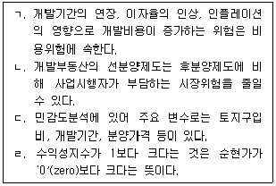
- ㄱ, ㄴ
- ㄴ, ㄷ
- ㄱ, ㄷ, ㄹ
- ㄴ, ㄷ, ㄹ
- ㄱ, ㄴ, ㄷ, ㄹ
(정답률: 알수없음)
109. 공인중개사법령상 공인중개사 정책심의위원회에서 공인중개사의 업무에 관하여 심의하는 사항으로 명시되지 않은 것은?
- 개업공인중개사의 교육에 관한 사항
- 부동산 중개업의 육성에 관한 사항
- 공인중개사의 시험 등 공인중개사의 자격취득에 관한 사항
- 중개보수 변경에 관한 사항
- 손해배상책임의 보장 등에 관한 사항
(정답률: 알수없음)
110. 공인중개사법령상 공인중개사의 중개대상물이 아닌 것은? (다툼이 있으면 판례에 따름)
- 토지거래허가구역 내의 토지
- 가등기가 설정되어 있는 건물
- 「입목에 관한 법률」에 따른 입목
- 하천구역에 포함되어 사권이 소멸된 포락지
- 「공장 및 광업재단 저당법」에 따른 광업재단
(정답률: 알수없음)
111. 우리나라의 부동산조세제도에 관한 설명으로 옳지 않은 것은?
- 양도소득세와 취득세는 신고납부방식이다.
- 취득세와 증여세는 부동산의 취득단계에 부과한다.
- 양도소득세와 종합부동산세는 국세에 속한다.
- 상속세와 증여세는 누진세율을 적용한다.
- 종합부동산세와 재산세의 과세기준일은 매년 6월 30일이다.
(정답률: 알수없음)
112. 부동산 권리분석에 관련된 설명으로 옳지 않은 것은?
- 부동산 권리관계를 실질적으로 조사·확인·판단하여 일련의 부동산활동을 안전하게 하려는 것이다.
- 대상부동산의 권리관계를 조사·확인하기 위한 판독 내용에는 권리의 하자나 거래 규제의 확인·판단이 포함된다.
- 매수인이 대상부동산을 매수하기 전에 소유권이전을 저해하는 사항이 있는지 여부를 확인하기 위하여 공부(公簿) 등을 조사하는 일도 포함된다.
- 우리나라 등기는 관련 법률에 다른 규정이 있는 경우를 제외하고는 당사자의 신청 또는 관공서의 촉탁에 따라 행하는 신청주의 원칙을 적용한다.
- 부동산 권리분석을 행하는 주체가 분석대상권리의 주요한 사항을 직접 확인해야 한다는 증거주의의 원칙은 권리분석활동을 하는 데 지켜야 할 이념이다.
(정답률: 알수없음)
113. 다음 중 부동산 권리분석시 등기사항전부증명서를 통해 확인할 수 없는 것은 몇 개인가?
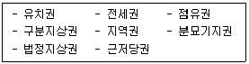
- 3개
- 4개
- 5개
- 6개
- 7개
(정답률: 알수없음)
114. 감정평가 과정상 지역분석과 개별분석에 관한 설명으로 옳지 않은 것은?
- 지역분석을 통해 해당 지역 내 부동산의 표준적 이용과 가격수준을 파악할 수 있다.
- 지역분석은 개별분석보다 먼저 실시하는 것이 일반적이다.
- 인근지역이란 대상부동산이 속한 지역으로서 부동산의 이용이 동질적이고 가치형성요인 중 개별요인을 공유하는 지역을 말한다.
- 유사지역이란 대상부동산이 속하지 아니하는 지역으로서 인근지역과 유사한 특성을 갖는 지역을 말한다.
- 지역분석은 대상지역에 대한 거시적인 분석인 반면, 개별분석은 대상부동산에 대한 미시적인 분석이다.
(정답률: 알수없음)
115. 부동산 평가활동에서 부동산 가격의 원칙에 관한 설명으로 옳지 않은 것은?
- 예측의 원칙이란 평가활동에서 가치형성요인의 변동추이 또는 동향을 주시해야 한다는 것을 말한다.
- 대체의 원칙이란 부동산의 가격이 대체관계의 유사 부동산으로부터 영향을 받는다는 것을 말한다.
- 균형의 원칙이란 부동산의 유용성이 최고도로 발휘되기 위해서는 부동산이 외부환경과 균형을 이루어야 한다는 것을 말한다.
- 변동의 원칙이란 가치형성요인이 시간의 흐름에 따라 지속적으로 변화함으로써 부동산 가격도 변화한다는 것을 말한다.
- 기여의 원칙이란 부동산의 가격이 대상부동산의 각 구성요소가 기여하는 정도의 합으로 결정된다는 것을 말한다.
(정답률: 알수없음)
116. 감정평가에 관한 규칙상 현황기준 원칙에 관한 내용으로 옳지 않은 것은? (단, 감정평가조건이란 기준시점의 가치형성요인 등을 실제와 다르게 가정하거나 특수한 경우로 한정하는 조건을 말함)
- 감정평가업자는 감정평가조건의 합리성, 적법성이 결여되거나 사실상 실현 불가능 하다고 판단할 때에는 의뢰를 거부하거나 수임을 철회할 수 있다.
- 현황기준 원칙에도 불구하고 법령에 다른 규정이 있는 경우에는 감정평가조건을 붙여 감정평가할 수 있다.
- 현황기준 원칙에도 불구하고 대상물건의 특성에 비추어 사회통념상 필요하다고 인정되는 경우에는 감정평가조건을 붙여 감정평가할 수 있다.
- 감정평가의 목적에 비추어 사회통념상 필요하다고 인정되어 감정평가조건을 붙여 감정평가하는 경우에는 감정평가조건의 합리성, 적법성 및 실현가능성의 검토를 생략할 수 있다.
- 현황기준 원칙에도 불구하고 감정평가 의뢰인이 요청하는 경우에는 감정평가조건을 붙여 감정평가할 수 있다.
(정답률: 알수없음)
117. 감정평가에 관한 규칙상 대상물건별 주된 감정평가방법으로 옳지 않은 것은? (단, 대상물건은 본래 용도의 효용가치가 있음을 전제함)
- 선박 – 거래사례비교법
- 건설기계 – 원가법
- 자동차 – 거래사례비교법
- 항공기 – 원가법
- 동산 - 거래사례비교법
(정답률: 알수없음)
118. 다음 자료를 활용하여 공시지가기준법으로 평가한 대상토지의 단위면적당 가액은? (단, 주어진 조건에 한함)
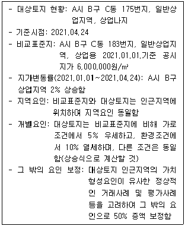
- 5,700,000원/m2
- 5,783,400원/m2
- 8,5⑤,000원/m2
- 8,675,100원/m2
- 8,721,000원/m2
(정답률: 알수없음)
119. 다음 자료를 활용하여 원가법으로 평가한 대상건물의 가액은? (단, 주어진 조건에 한함)
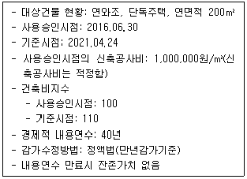
- 175,000,000원
- 180,000,000원
- 192,500,000원
- 198,000,000원
- 203,500,000원
(정답률: 알수없음)
120. 감정평가 실무기준에서 규정하고 있는 수익환원법에 관한 내용으로 옳지 않은 것은?
- 수익환원법으로 감정평가할 때에는 직접환원법이나 할인현금흐름분석법 중에서 감정평가 목적이나 대상물건에 적절한 방법을 선택하여 적용한다.
- 부동산의 증권화와 관련한 감정평가 등 매기의 순수익을 예상해야 하는 경우에는 할인현금흐름분석법을 원칙으로 하고 직접환원법으로 합리성을 검토한다.
- 직접환원법에서 사용할 환원율은 요소구성법으로 구하는 것을 원칙으로 한다. 다만, 요소구성법의 적용이 적절하지 않은 때에는 시장추출법, 투자결합법, 유효총수익승수에 의한 결정방법, 시장에서 발표된 환원을 등을 검토하여 조정할 수 있다.
- 할인현금흐름분석법에서 사용할 할인율은 투자자조사법(지분할인율), 투자결합법(종합할인율), 시장에서 발표된 할인율 등을 고려하여 대상물건의 위험이 적절히 반영되도록 결정하되 추정된 현금흐름에 맞는 할인율을 적용한다.
- 복귀가액 산정을 위한 최종환원율은 환원율에 장기위험프리미엄·성장률·소비자물가 상승률 등을 고려하여 결정한다.
(정답률: 알수없음)